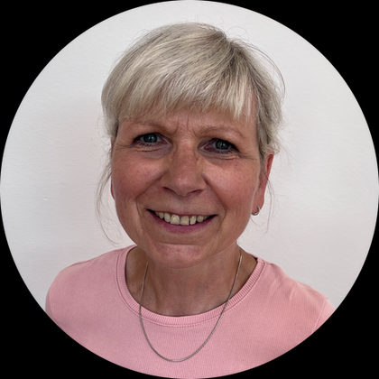

Mgr. Eva Faltisová
třídní pedagog, zelená třída
Číst dál
Práce s dětmi mě naplňuje už více než třicet let. Vždy jsem věřila, že děti potřebují laskavé přijetí, respekt k jejich individualitě, bezpečné prostředí a prostor pro vlastní objevování a poznávání. Během své pedagogické praxe jsem hledala různé přístupy k učení, zkoušela nové cesty a postupně je přenášela do každodenní výuky.
Možnost podílet se na založení Kroku pro mě byla přirozeným vyústěním této cesty. Dnes mohu své zkušenosti předávat dál, podílet se na rozvoji pedagogického přístupu naší školy a především provázet děti jejich učením a růstem. To mi dává velký smysl.